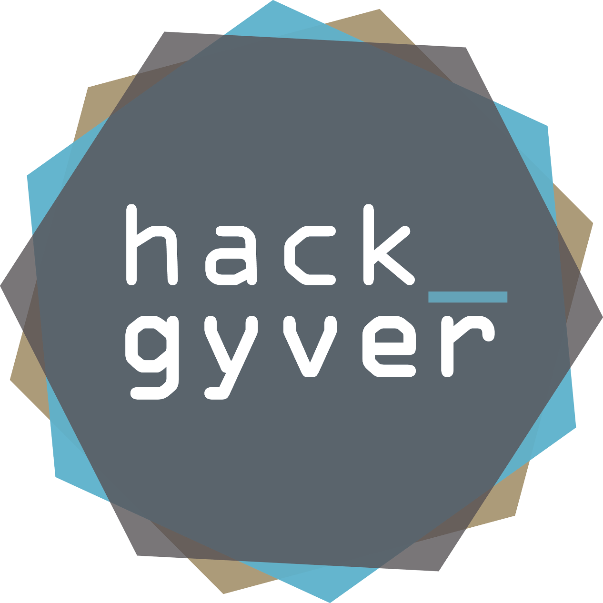

I am keen on building large-scale web services using open-source stacks.
I graduated from ENSIIE Paris in July 2016 and am now working with CERN's Networking team on deploying a new campus-wide Wi-Fi network.
Before that, from 2013 to 2016, I held a Systems & Networks Engineer position at SNCF Réseau where I implemented web technologies on various real-time systems onboard IRIS 320, a special high-speed train dedicated to railway measurement.
I have a strong interest in networking, infrastructure management, system tuning & web technologies.
Skills
System administration
My primary operating system is Arch Linux.
I manage several dedicated servers that run PHP / Python / Ruby on Rails applications, VPN gateways and distributed filesystems, among others.
See a list| ArchLinux | |
| Debian / Ubuntu | |
| Entreprise Linuces | |
| Windows 7 and later | |
Virtualization and cloud
I use Proxmox VE and closely follow infrastructure technologies such as OpenStack, Docker and CoreOS.
See a list| Proxmox VE (KVM + QEMU) | |
| OpenStack (Nova, Swift, Neutron) | |
| Docker | |
| VMware ESXi | |
Programming languages
Python 3 and Node.js are my prefered platforms for developping cross-platform applications.
On Windows, I have a good experience developping Windows Forms and ASP.NET / Nancy web apps.
I used C on numerous occasions, mostly when performance was the key.
See a list or
Browse my code and
fork me on GitHub| Python | |
| JavaScript | |
| C# / .NET | |
| C | |
| Java | |
| C++ | |
Web
My understanding of the REST architecture extends to the practical implementation of several HTTP web services and APIs.
Micro-frameworks in Python 3 and Node.js are my prefered environments, but I have an experience in PHP and C# / .NET too. I am familiar with jQuery, AngularJS and CSS on the client-side.
See a listRuntimes
| Express.js / Koa.js | |
| Flask (Python) | |
| PHP micro frameworks | |
| Django (Python) | |
Servers
Client-side
Databases
I learnt SQL with MySQL and Postgres and am now proficient at MongoDB.
See a list| PostgreSQL | |
| MySQL, MariaDB | |
| MongoDB | |
| CouchDB | |
Networks
I designed and implemented several Ethernet / IP networks, including a 20Gbps backbone onboard the IRIS 320 train. I also have a sound knowledge of the TCP, UDP and HTTP protocols.
My last semester of studies focused on cellular networks and SDN protocols, mostly OpenFlow.
See a list| IP / TCP / UDP | |
| GPRS / UMTS / LTE | |
| VLANs, LAG (LACP), STP (HP switches) | |
| OpenFlow | |
Work
I am currently working at CERN, the European Organization for Nuclear Research.
Between 2013 and 2016, I held a Junior Systems & Networks engineer position at SNCF Réseau.
since September 2016
As a Fellow within the Communications Systems group, I work on tools that will smoothen the deployment and the configuration of several thousand Access Points for CERN's new Wi-Fi network.
I will also work on benchmarking several routing solutions for CERN's internal network, which connects the LHC experiments with the Computer Centre.
2013 - 2016
SNCF Réseau is the government-owned company responsible for France's national rail network maintenance. I worked on modernizing multiple systems of IRIS 320, a special high-speed train customized for railway inspection purposes.
Learn more about IRIS 320Summer 2013
As a Summer Student, I worked on moving a WLCG testing tool to CERN's new OpenStack-based private cloud infrastructure. It was the first occasion for me to put my hands on a very large computing infrastructure, and a great opportunity to discover a lot of different cultures gathered in the heart of Europe.
Read my reportEducation
I graduated from ENSIIE Paris in 2016.
From September 2011 to June 2013, I have been doing my BSc in Belfort, France.
ENSIIE Paris / TELECOM SudParis
2013 - 2016
I did my first two years of engineering studies in ENSIIE Paris. During my last semester, from September 2015 to January 2016, I took a specialized course at TELECOM SudParis focusing on mobile cellular networks (LTE / 5G) and software-defined networking (SDN / NFV).
IUT Belfort-Montbéliard
2011 - 2013
I obtained a DUT Informatique in 2013, which is the French equivalent to a BSc in Computer Science. My main academic project consisted in the design and development of a web services platform for l'Usine à Belfort, a local coworking space.
During this cursus, I also co-founded HackGyver, Belfort's hackerspace.
Side projects, hobbies and stuff I am proud of
Huawei Telecom Seeds for the Future
I was a laureate of this contest from Huawei that included a one-month trip to China as a reward. We visited the cities of Beijing, Shenzhen, Guangzhou and Hong-Kong, and were given Chinese courses and IT training.
HackGyver
I co-founded HackGyver, Belfort's hackerspace, in March 2012.
Its members particularly focus on computer security, reverse engineering and electronics.
About HackGyver
In May 2012, @maijin212 and I founded HackGyver, Belfort's hackerspace.
From May 2012 to March 2013, we organized several public events and weekly meetings at L'Usine à Belfort, promoted the association, and deployed a website and a wiki.
I was personnally in charge of the management of the association's treasury and websites. Below is an interview I made with Besançon TV about HackGyver (in French) :


{kind=link}